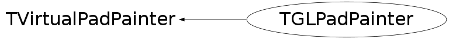

class TGLPadPainter: public TVirtualPadPainter
"Delegating" part of TGLPadPainter. Line/fill/etc. attributes can be set inside TPad, but not only there: many of them are set by base sub-objects of 2d primitives (2d primitives usually inherit TAttLine or TAttFill etc.). And these sub-objects call gVirtualX->SetLineWidth ... etc. So, if I save some attributes in my painter, it will be mess - at any moment I do not know, where to take line attribute - from gVirtualX or from my own member. So! All attributed, _ALL_ go to/from gVirtualX.
Function Members (Methods)
public:
| TGLPadPainter() | |
| ~TGLPadPainter() | |
| static TClass* | Class() |
| virtual void | ClearDrawable() |
| virtual void | CopyDrawable(Int_t id, Int_t px, Int_t py) |
| virtual Int_t | CreateDrawable(UInt_t w, UInt_t h) |
| virtual void | DestroyDrawable() |
| virtual void | DrawBox(Double_t x1, Double_t y1, Double_t x2, Double_t y2, TVirtualPadPainter::EBoxMode mode) |
| virtual void | DrawFillArea(Int_t n, const Double_t* x, const Double_t* y) |
| virtual void | DrawFillArea(Int_t n, const Float_t* x, const Float_t* y) |
| virtual void | DrawLine(Double_t x1, Double_t y1, Double_t x2, Double_t y2) |
| virtual void | DrawLineNDC(Double_t u1, Double_t v1, Double_t u2, Double_t v2) |
| virtual void | DrawPolyLine(Int_t n, const Double_t* x, const Double_t* y) |
| virtual void | DrawPolyLine(Int_t n, const Float_t* x, const Float_t* y) |
| virtual void | DrawPolyLineNDC(Int_t n, const Double_t* u, const Double_t* v) |
| virtual void | DrawPolyMarker(Int_t n, const Double_t* x, const Double_t* y) |
| virtual void | DrawPolyMarker(Int_t n, const Float_t* x, const Float_t* y) |
| virtual void | DrawText(Double_t x, Double_t y, const char* text, TVirtualPadPainter::ETextMode mode) |
| virtual void | DrawTextNDC(Double_t x, Double_t y, const char* text, TVirtualPadPainter::ETextMode mode) |
| virtual Color_t | GetFillColor() const |
| virtual Style_t | GetFillStyle() const |
| virtual Color_t | GetLineColor() const |
| virtual Style_t | GetLineStyle() const |
| virtual Width_t | GetLineWidth() const |
| virtual Short_t | GetTextAlign() const |
| virtual Float_t | GetTextAngle() const |
| virtual Color_t | GetTextColor() const |
| virtual Font_t | GetTextFont() const |
| virtual Float_t | GetTextMagnitude() const |
| virtual Float_t | GetTextSize() const |
| virtual void | InitPainter() |
| virtual void | InvalidateCS() |
| virtual TClass* | IsA() const |
| virtual Bool_t | IsTransparent() const |
| virtual void | LockPainter() |
| static TVirtualPadPainter* | TVirtualPadPainter::PadPainter(Option_t* opt = "") |
| virtual void | SaveImage(TVirtualPad* pad, const char* fileName, Int_t type) const |
| virtual void | SelectDrawable(Int_t device) |
| virtual void | SetFillColor(Color_t fcolor) |
| virtual void | SetFillStyle(Style_t fstyle) |
| virtual void | SetLineColor(Color_t lcolor) |
| virtual void | SetLineStyle(Style_t lstyle) |
| virtual void | SetLineWidth(Width_t lwidth) |
| virtual void | SetOpacity(Int_t percent) |
| virtual void | SetTextAlign(Short_t align) |
| virtual void | SetTextAngle(Float_t tangle) |
| virtual void | SetTextColor(Color_t tcolor) |
| virtual void | SetTextFont(Font_t tfont) |
| virtual void | SetTextSize(Float_t tsize) |
| virtual void | SetTextSizePixels(Int_t npixels) |
| virtual void | ShowMembers(TMemberInspector& insp) |
| virtual void | Streamer(TBuffer& b) |
| void | StreamerNVirtual(TBuffer& b) |
private:
| TGLPadPainter(const TGLPadPainter& rhs) | |
| void | DrawPolyMarker() |
| TGLPadPainter& | operator=(const TGLPadPainter& rhs) |
| void | RestoreModelviewMatrix() const |
| void | RestoreProjectionMatrix() const |
| void | RestoreViewport() |
| void | SaveModelviewMatrix() const |
| void | SaveProjectionMatrix() const |
| void | SaveViewport() |
Data Members
Class Charts
{kind=link}
{kind=link}
{kind=link}
{kind=link}

Function documentation
Bool_t IsTransparent() const
Delegate to gVirtualX. IsTransparent is implemented as inline function in TAttFill.
void SelectDrawable(Int_t device)
For gVirtualX this means select pixmap (or window) and all subsequent drawings will go into this pixmap. For OpenGL this means the change of coordinate system and viewport.
void InitPainter()
Init gl-pad painter: 1. 2D painter does not use depth test, should not modify depth-buffer content (except initial cleanup). 2. Disable cull face. 3. Disable lighting. 4. Set viewport (to the whole canvas area). 5. Set camera. 6. Unlock painter.
void LockPainter()
Locked state of painter means, that GL context can be invalid, so no GL calls can be executed.
void DrawLineNDC(Double_t u1, Double_t v1, Double_t u2, Double_t v2)
Draw line segment in NDC coordinates.
void DrawBox(Double_t x1, Double_t y1, Double_t x2, Double_t y2, TVirtualPadPainter::EBoxMode mode)
Draw filled or hollow box.
void DrawFillArea(Int_t n, const Double_t* x, const Double_t* y)
Draw tesselated polygon (probably, outline only).
void DrawFillArea(Int_t n, const Float_t* x, const Float_t* y)
Draw tesselated polygon (never called, probably, since TPad::PaintFillArea for floats is deprecated).
void DrawPolyLine(Int_t n, const Double_t* x, const Double_t* y)
Draw poly-line in user coordinates.
void DrawText(Double_t x, Double_t y, const char* text, TVirtualPadPainter::ETextMode mode)
Draw text. This operation is especially dangerous if in locked state - ftgl will assert on zero texture size (which is result of bad GL context).
void DrawTextNDC(Double_t x, Double_t y, const char* text, TVirtualPadPainter::ETextMode mode)
Draw text in NDC. This operation is especially dangerous if in locked state - ftgl will assert on zero texture size (which is result of bad GL context).
void SaveProjectionMatrix() const
Save the projection matrix. Attention! GL_PROJECTION will become the current matrix after this call!
void RestoreProjectionMatrix() const
Restore the projection matrix. Attention! GL_PROJECTION will become the current matrix after this call!
void SaveModelviewMatrix() const
Save the modelview matrix. Attention! GL_MODELVIEW will become the current matrix after this call!
void RestoreModelviewMatrix() const
Restore the modelview matrix. Attention! GL_MODELVIEW will become the current matrix after this call!
void SaveImage(TVirtualPad* pad, const char* fileName, Int_t type) const
Using TImage save frame-buffer contents as a picture.